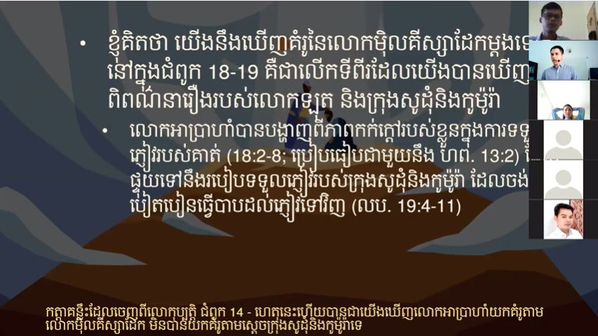
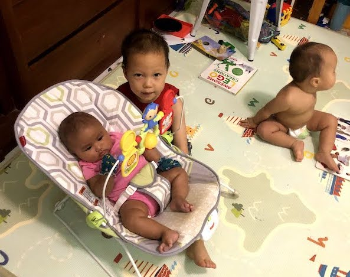
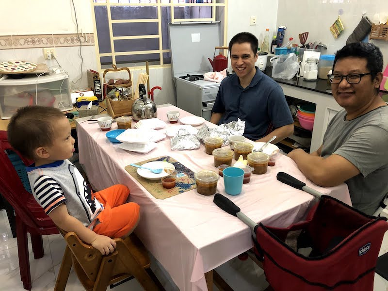
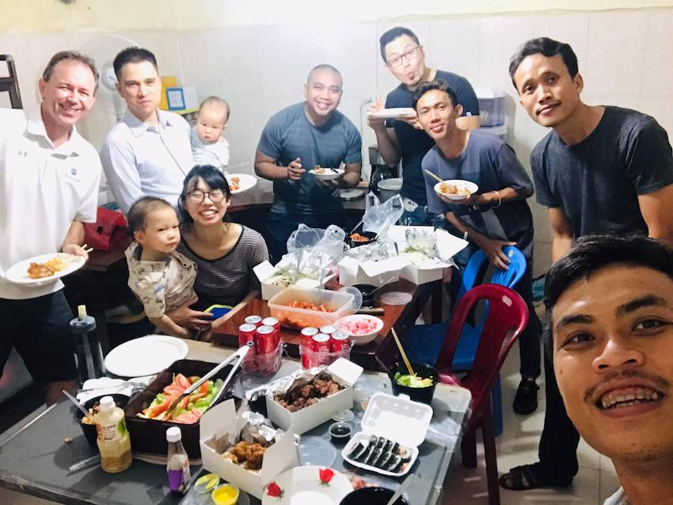
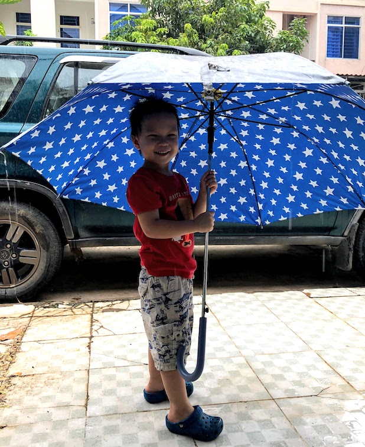

Summer in Phnom Penh
សួស្ដី! (Hello in Khmer)
Time is flying by as we plug away at teaching, working, ministry, training up our Queybies (Quey babies), and planning for the future. We have been feeling extra busy these past couple months and have been pushed to really use our time well and wisely. We’re enjoying so much watching our boys grow and are seeing the weight and importance of intentionally training them up in righteousness as well as thinking through cultural, social, emotional issues. Church is still not meeting, but we have been able to meet with our teammates most weeks to worship together which has brought refreshment and encouragement.
Teaching
 Ryan teaching online As of now, Ryan has only one more week of the semester left! Thank you for your prayers and kind words. We have had our fair share of discouragements and encouragements when thinking about how the classes have gone so far. Teaching online has proved, as expected, to be very taxing and difficult for relationships/interaction in general (some students will turn off their cameras during class!). Although there have been many shifted expectations on our part, as the semester has gone by, we are learning much about the Cambodian culture in how the students conduct themselves, participate, etc. We have been grateful for even a few classes where students seemed engaged and interested in the book of Hebrews. Ryan has been blessed to have a Khmer TA who has helped fill in some gaps and also give teaching feedback.
Working
Ryan’s work has ramped up and we’ve been thankful to have no lack! We are asking the Lord for wisdom to know which direction he would have us go in regards to upfront investment vs. long-term commitment, but trust that He will guide us. Ryan dilligently works late into the night and we are grateful for his hard-working efforts.
Ministry
Church in general is still pretty on hold during this season. COVID cases are still pretty high since early this year and gatherings of more than 20 people are prohibited to meet. Our church is continuing to do a livestream online, but we have actually shifted to meeting with our teammates to worship together each week. Please be praying for leaders in the church nationwide to make decisions regarding meeting, protecting and teaching their flocks as these precautions are still in place. We had the chance to meet with our pastor’s family and it was definitely a treat. Ryan’s small group is still meeting a couple times a month online and he is able to teach some and build relationships this way. We are grateful they are still able to study and grow together!
 The boys love having the Chheangs over, especially their newest addition, baby Monika!  Authentic Indian food with teammate, Beilie! Apart from church, we have been trying to get to know neighbors and people in the community as they are comfortable. It has been a joy to meet people in our neighborhood, but I (Rebekah) have been feeling as though I have been shrinking back from diving much deeper than friendly “small-talk” conversations and am in need of stronger conviction, compassion and trust in the Lord. I often think that I don’t want to have culturally jarring conversations for fear of getting off on the wrong foot in a given relationship, and there definitely is a place for discerning opportunities, but please pray that it isn’t an excuse or hindrance to the overall goal of being the light and the salt of the world.
 Lunch with the translation team! Ryan has been able to make weekly visits to the ACTION translation team’s office to encourage, build relationships and show our support of their hard work. The team has grown over the years and now has five local Khmer staff members who are working hard and seeking to serve the Lord in this way. We hope to be an encouragement and support to the men (and their families) who work at the ACTION office.
Apart from this, Ryan is pouring all of his time into preparing lessons and teaching the book of Hebrews class at the Bible college, as well as getting ready for his next class –the book of John. We are praying that classes will be in person next semester as this would give Ryan, as well as Rebekah, more opportunities to actually get to know the students and we think it would help with learning in the classroom as well!
Queybies
Happy boyWe are turning the corner on Quey-by #3’s arrival and are down to a few weeks left. We are working to get things wrapped up before her arrival (yes, actually she’s a girl!- the doctors were wrong at first) and take advantage of some opportunities to meet with people before then. Parenthood, as many of you know, is challenging each day and we pray for wisdom often! Please pray for our transition from two to three and for greater trust in the Lord as we look to Him for guidance and help.
 Jonathan loves the rain We praise God that we have found an option for physical therapy for Samuel here in the city and he has been doing well. He has been getting stronger and is learning to use his God-given body well! We are also thankful for the opportunities to express our love for him and how we value human life when people ask about his limb difference. He captures the hearts of many with his joyful smiles :)
Also, due to the COVID situation here in Phnom Penh, there is a chance Rebekah will have to be transferred to a different hospital if she is found to be COVID positive during labor. There have been complications we have heard of as other women have had to be transferred and we are praying that this will not be the case for us. Overall though, please pray for our hearts that we will be content and filled with the joy of the Lord whatever our circumstances may be.
Planning for the Future
As of now, we don’t have plans to leave the city after our decision to go move to Mondulkiri changed. Ryan is excited to teach more at the Bible school and we are settling in to our home and neighborhood very well. While there are a plethora of opportunities and budding ministries here and there, we are seeking wisdom from the Lord to know who and which of these are sound and led by faithful men. Please pray that we are sensitive to the Lord’s leading and that we will seek counsel along the way if the Lord leads us in that direction (as moving outside the city has significant advantages for ministry).
In Him,
Ryan and Rebekah